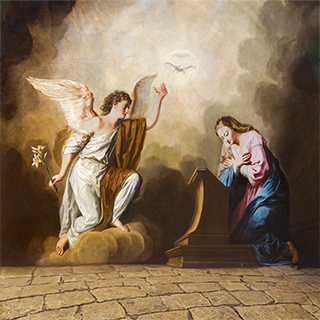

“Gabriel” significa “fortaleza de Dios”. A San Gabriel se le encomendó la misión de anunciar
a la Virgen María que Ella era la elegida para ser la Madre del Salvador.
DIOS HA QUERIDO REVELARNOS SU PODER A TRAVÉS DE LOS SANTOS ARCÁNGELES
En una de sus homilías, el Papa San Gregorio Magno (c. 540-604), Padre y Doctor de la Iglesia, señala que Dios
quiso revelar los nombres personales de estos tres arcángeles como una forma de conocer “cuál es la misión específica
para la cual nos son enviados”. De esa manera, es posible acudir a ellos en situaciones particulares, de acuerdo
al poder que Dios le dio a cada uno."Fortitudo Dei" (Fortaleza de Dios), uno de los tres arcángeles mencionados en
la Biblia. Sólo se registran cuatro apariciones de Gabriel:
El 29 de septiembre de 2017, el Papa Francisco, con ocasión de la festividad que hoy se celebra, afirmó: «Hoy celebramos
el día de tres de estos arcángeles porque han tenido un papel importante en la historia de la salvación. Y conmemoramos
a estos tres porque también tienen un papel importante en nuestro camino hacia la salvación».
En Dn VIII, explica la visión del carnero y del macho cabrío como presagiando la destrucción del Imperio Persa
por el Macedonio Alejandro Magno, y que posterior a su muerte el reino sería divido entre sus generales. De uno
de ellos nacería Antioco Epifanio.
En el capítulo IX, luego de que Daniel había rezado por Israel, leemos que "aquél varón Gabriel se me acercó en rápido vuelo" y le comunicó la misteriosa profecía de las "setenta
semanas" de años que deben pasar antes de la venida de Cristo. En el capítulo x, no queda claro si es que el ángel es Gabriel o no, pero de cualquier manera podemos atribuirle
la maravillosa descripción de los versículos 5 y 6. En N.T. predice a Zacarías el nacimiento del Precursor, y a María la Madre de Nuestro Salvador.

Nombre:
Gabriel (Masculino)
Significado:
Dios es mi protector, de origen
Hebreo
Celebran:
Gabi, Gabriel, Gabriela
Celebración:
29 de septiembre
Es el ángel de la Encarnación y del Consuelo, y en la tradición cristiana Gabriel es siempre el ángel de la misericordia mientras que Miguel es más bien el del juicio. Al mismo
tiempo, incluso en la Biblia, es de Gabriel, el poder del ángel de Dios, y es importante notar la frecuencia con la que tales palabras como: "grande", "pueda", "poder", y "fuerza"
aparecen en los pasajes referidos anteriormente. Los judíos parecen haber insistido particularmente en este rasgo del carácter de Gabriel, y es recordado por ellos como el ángel
del juicio, mientras que Miguel es llamado el ángel de la misericordia. Así, atribuyen a Gabriel la destrucción de Sodoma y de las huestes Senaquerib, sin embargo también lo
recuerdan como el ángel que enterró a Moisés, y como el enviado a marcar la figura Tau en la frente del elegido (Ez, 4). En literatura judía posterior se consideraba que los nombres
de los ángeles tenían una eficacia peculiar, y el Museo Británico posee unos recipientes con inscripciones de sortilegios en Hebreo, Arameo y Sirio en las que aparecen los
nombres de Miguel, Rafael y Gabriel. Estos recipientes fueron encontrados en Hillah, lugar de Babilonia, y constituye una interesante reliquia de la obsesión judía. En literatura
apócrifa cristiana los mismos nombres aparecen, cf. Enoc, IX, y el Apocalipsis de la Virgen María.
Como ha sido recalcado, Gabriel es mencionado sólo en dos oportunidades en el Nuevo Testamento, pero no es razonable suponer con la tradición cristiana que es él quien se
apareció a San José y a los pastores, y también que fue él quien "fortaleció" a nuestro Señor en el jardín (cf. El himno para Laudes del 24 de Marzo). Gabriel es generalmente
llamado sólo arcángel, pero la expresión usada por San Rafael, "yo soy el ángel Rafael, uno de los siete que asistimos delante del Señor" (Tob XII, 15) y las propias palabras
de San Gabriel, "Yo soy Gabriel que asisto a la vista de Dios" (Lc, 1, 19), han llevado a algunos a pensar que estos ángeles deben pertenecer al mayor rango; pero esto se
explica generalmente refiriéndose a su rango como el mayor de los mensajeros de Dios, y no ubicándolos entre los Serafines y Querubines (cf. St. Tomás, I, Q. CXII, a.3; III,
Q. XXX, a.2, ad 4um).